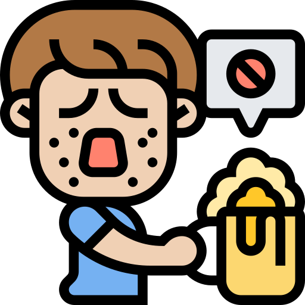

.png) Porque el alcohol sirve para enfiestarse
Porque el alcohol sirve para enfiestarse
11/11/2022
El alcohol
El alcohol es un líquido incoloro, de olor característico, soluble tanto en agua como en grasas; se caracteriza por ser una sustancia psicoactiva, depresora del sistema nervioso central, y con capacidad de causar dependencia. Se calcula que 1 gramo de alcohol aporta al organismo 7,1 Kcal.; este aporte energético no se acompaña de un aporte nutritivo como minerales, proteínas o vitaminas
Durante la pubertad y adolescencia, los jóvenes experimentan una serie de cambios físicos y psicológicos que hacen de esta etapa un periodo de inestabilidad donde los adolescentes tratan de autodefinirse y buscar su rol en la sociedad. Esta situación los convierte en uno de los sectores más vulnerables ante el consumo de alcohol, ya que esta sustancia está muy relacionada con el ocio recreativo y la socialización. Entender qué representa el alcohol para los jóvenes puede ayudar a comprender mejor las causas que hacen que los adolescentes consuman bebidas alcohólicas, lo que servirá para reforzar e incrementar la eficacia de las medidas de prevención y actuación.
Historia del Bacardi
LA HISTORIA DE BACARDÍ 8 min de lectura UNA FAMILIA COMO NINGUNA OTRA Desde un sueño familiar en la Cuba de 1800, hasta celebrar los momentos que hoy importan a nuestra comunidad global, esta es la historia de Bacardí: más de 150 años de unir a las personas. 1862 – TODO COMIENZA CON UN SUEÑO
 Investigacion
Investigacion
11/11/2022
En una Investigacion sobre el Alcohol que vi en google scholar dicen que hicieron un experimento con diferentes jovenes en el que vieron o quisieron ver la relacion del alcohol en sus cuerpos y la verdad es bastante impactante, porque unos lo hacen por autoestima otros lo hacen para ahogar penas si es muy fuerte ver que la gente hace eso, estos son algunos datos:
Citas de la gente que hizo la Investigacion
Alicia Álvarez Aguirre María Magdalena Alonso Castillo Ana Carolina Guidorizzi ZanettiEl alcohol es una sustancia psicoactiva que se ha consumido desde hace miles de años. Si bien el consumo moderado de alcohol puede tener efectos positivos en la salud, como reducir el riesgo de enfermedades del corazón, un consumo excesivo y regular puede tener graves consecuencias para la salud. Aquí te presento algunas investigaciones relevantes sobre el alcohol: Efectos del alcohol en el cerebro: El alcohol puede tener efectos negativos en el cerebro a largo plazo, incluso en cantidades moderadas. Según un estudio publicado en la revista Alcohol and Alcoholism, el consumo excesivo de alcohol puede causar daño en las células del cerebro y reducir la función cognitiva, lo que puede afectar la memoria, la capacidad de aprendizaje y la toma de decisiones. Riesgos para la salud: El consumo excesivo de alcohol puede tener graves consecuencias para la salud, como enfermedades hepáticas, trastornos gastrointestinales y enfermedades cardiovasculares. Según la Organización Mundial de la Salud, el consumo de alcohol es un factor de riesgo importante para más de 200 enfermedades, incluyendo varios tipos de cáncer. Alcohol y adicción: El alcoholismo es una enfermedad crónica que se caracteriza por el consumo excesivo y compulsivo de alcohol. Según la National Institute on Alcohol Abuse and Alcoholism, el alcoholismo puede tener un impacto negativo en la salud física y mental, así como en las relaciones interpersonales y la vida laboral. La prevención y el tratamiento del alcoholismo son fundamentales para evitar sus graves consecuencias. Consumo de alcohol en la juventud: El consumo de alcohol en la juventud es especialmente preocupante, ya que puede tener efectos negativos en el desarrollo del cerebro y aumentar el riesgo de adicción en la edad adulta. Según un estudio publicado en la revista JAMA Pediatrics, el consumo de alcohol en la adolescencia puede tener un impacto negativo en el rendimiento académico y la capacidad de atención. Tendencias en el consumo de alcohol: En la actualidad, existe una tendencia hacia un consumo más moderado y responsable de alcohol, especialmente entre los millennials y la Generación Z. Según una encuesta realizada por la empresa de investigación de mercado IWSR, los consumidores jóvenes están optando por bebidas con menos alcohol y buscando una experiencia de consumo más saludable. En resumen, el consumo de alcohol puede tener efectos tanto positivos como negativos en la salud, dependiendo de la cantidad y la frecuencia de consumo. Es importante ser consciente de los riesgos y tomar medidas para reducir el consumo excesivo y prevenir la adicción.
El consumo de alcohol es una práctica generalizada en todo el mundo, pero también es una de las principales causas evitables de muerte y enfermedad. Según la Organización Mundial de la Salud, el alcohol es responsable de aproximadamente 3 millones de muertes cada año, y se ha relacionado con una amplia variedad de afecciones médicas, desde enfermedades hepáticas y cardiovasculares hasta trastornos mentales y adicciones. Esta investigación tiene como objetivo analizar los factores de riesgo asociados con las muertes relacionadas con el alcohol y evaluar las políticas y estrategias de prevención que pueden ayudar a reducir el impacto del alcohol en la salud pública. Para llevar a cabo esta investigación, se utilizará una metodología mixta que combina el análisis de datos estadísticos con estudios de caso y entrevistas a expertos en salud pública y política. Se analizarán los datos de encuestas y estudios sobre el consumo de alcohol y las muertes relacionadas con el alcohol en diferentes regiones y países del mundo. También se realizarán estudios de caso para analizar las políticas y estrategias de prevención implementadas en diferentes contextos nacionales y locales. Además, se llevarán a cabo entrevistas a expertos en salud pública y política para evaluar la eficacia de estas políticas y estrategias, así como para identificar los principales desafíos y barreras que enfrentan los programas de prevención del alcohol. Se espera que esta investigación genere una mejor comprensión de los factores de riesgo asociados con las muertes relacionadas con el alcohol y de las políticas y estrategias de prevención que pueden ayudar a reducir el impacto del alcohol en la salud pública. Se espera que los resultados de esta investigación sean útiles para los responsables de la toma de decisiones, los planificadores de políticas y los profesionales de la salud pública que trabajan en la prevención del alcohol y la promoción de la salud pública. La investigación sobre las muertes relacionadas con el alcohol es crucial para comprender los riesgos asociados con el consumo de alcohol y para diseñar políticas y estrategias de prevención efectivas. Los resultados de esta investigación pueden ayudar a guiar la toma de decisiones de políticas y a informar las intervenciones de salud pública destinadas a reducir el impacto del alcohol en la sociedad. Se espera que esta investigación contribuya a la promoción de la salud pública y a la prevención de las muertes relacionadas con el alcohol en todo el mundo.
 Imagenes
Imagenes
11/11/2022

 Antros
Antros
23/02/2023
Abre nuevo antro en Queretaro
Los amantes de la vida nocturna de Querétaro tienen un nuevo lugar para disfrutar de buena música, bebidas y ambiente. The Normal, el nuevo antro de la ciudad, abrió sus puertas el pasado fin de semana en el centro histórico de Querétaro. Con una decoración moderna y elegante, The Normal ofrece un ambiente exclusivo y sofisticado para quienes buscan una experiencia nocturna diferente en la ciudad. La música en vivo y los DJ residentes tocarán una amplia gama de géneros musicales, desde la música electrónica hasta el rock clásico. Además de la música, The Normal cuenta con una amplia selección de bebidas de alta calidad, incluyendo una variedad de cócteles artesanales y licores premium. También hay opciones de comida para satisfacer los antojos de los visitantes. The Normal está ubicado en el corazón del centro histórico de Querétaro, en la calle Allende #10. El antro está abierto los viernes y sábados, desde las 9:00 pm hasta las 3:00 am. Con su apertura, The Normal se une a la vibrante escena nocturna de Querétaro, que ofrece una amplia gama de opciones para todos los gustos y preferencias. Si estás buscando un lugar para disfrutar de una noche inolvidable en la ciudad, The Normal podría ser justo lo que necesitas. Visítalo en tu próximo fin de semana y descubre por qué está generando tanto entusiasmo entre los amantes de la vida nocturna en Querétaro.
 Mis bebidas favoritas
11/11/2022
bebidas
- Cuba
- Paloma
- Smirnoff
- Ginger
- Tequila
- Kosako
- Four Loko
- Ron
- Perlas negras
- Long Island
Historia del Smirnoff
Smirnoff es una marca de vodka, fundada en 1860 en Rusia por Pyotr Smirnov. En 1886, Smirnov recibió la designación especial del zar como Proveedor de la Corte Imperial. La marca es propiedad del Grupo Diageo desde 1997.Cuando los bolcheviques se hicieron cargo de la empresa, las destilerías se cerraron y el hijo de Pyotr, Vladimir, emigro a París, donde reanimo la marca de vodka bajo el nombre de «Smirnoff». El diseño del logotipo de Smirnoff nació del deseo de reflejar la increíble historia de la marca, al tiempo que incluía un guiño al espíritu y la vitalidad contemporáneos. El diseño, completado por la oficina de Design Bridge, incluye un logotipo modificado con letras más audaces y una forma de «ceja» más grande en la que se asienta el logotipo
 Videos
Videos Links de apoyo y referencias
Links de apoyo y referencias